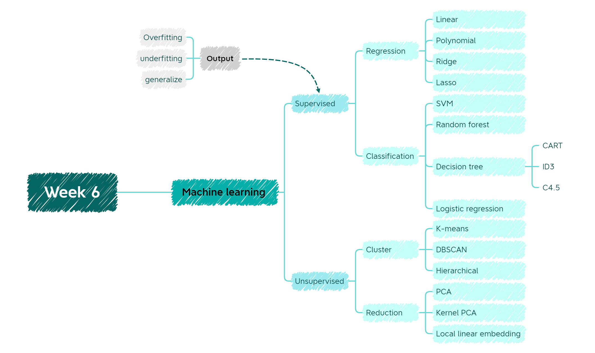

6 Week 6 Classification I
6.1 Summary

This week we mainly talked about the concepts of machine learning(ML). Generally speaking, there are three types of machine learning: supervised, unsupervised and semi-supervised learning. In this week’s study, we will focus on supervised and unsupervised learning.
6.1.1 Supervised learning
Let us start with the definition of supervised learning, which refers to learning a function (model parameters) from a given training dataset, from which results can be predicted when new data arrives. The training set requirements for supervised learning include the inputs and outputs, which can also be described as features and objectives. The targets in the training set are human-labelled. The common algorithms for supervised learning are classification and regression.
6.1.1.1 CART
The CART algorithm can be used to create both classification trees and regression trees, and contains three features:
- Binary Split: In each judgement process, the sample data is dichotomised.
- Split Based on One Variable: Each optimal split is on a single variable.
- Pruning strategy
Classification trees are used when the prediction target is a discrete value. Classification trees are used to classify data into two or more discrete (can only have certain values) categories and use the Gini coefficient as the basis for node splitting. The Gini coefficient formula is as follows:
\[Gini(D)=1-\sum_{k=1}^k p_k^2\]
The Gini coefficient represents the impurity of the model; the smaller the Gini coefficient, the lower the impurity and the better the characteristics.
When predicting continuous dependent variables, regression trees are used and the MSE is used as the basis for nodal splitting.
6.1.1.2 Overfitting
Overfitting means that the model performs well on the training set, but generalises poorly to the test set and new data sets. The reasons for this are:
- too little data in the training set
- inconsistent data distribution in the training and test sets
- the model itself is particularly complex
There are a number of solutions to this situation:
- Limit how trees grow
- Weakest link pruning - Change the number of leaves in each tree
- Changing Alpha
6.1.1.3 Random forest
The core idea of random forests is many better than one, specifically, each tree is constructed by selecting a fixed number of samples from the entire training sample set, and then selecting a fixed number of feature sets to build each decision tree in the random forest, with the final result determined by the principle of majority rule.
The advantages of random forests are clear:
- Has a very high accuracy rate
- Can be run efficiently on large data sets
- Does not require dimensionality reduction
- the importance of individual features in the classification problem can be evaluated
- An unbiased estimate of the internal generation error can be obtained during the generation process
- can also obtain good results for default value problems
However, it also has the unavoidable disadvantage that
- The model is too general and does not have the ability to handle too difficult samples correctly
6.1.1.4 SVM
SVM is a binary classification model that maps the feature vector of an instance to a number of points in space.
6.1.2 Unsupervised learning
In contrast to supervised learning, the unsupervised learning training set does not provide correct results, but allows the algorithm to try to identify similarities between different data so that data with common features can be grouped together.
Common algorithms for unsupervised learning are DBSCAN (See more detail at CASA 005), hierarchical clustering, K-means.
6.2 Application
Machine learning has a wide range of applications in the field of remote sensing, the reason is that machine learning has the ability to process high-dimensional data and map classes with very complex characteristics(Maxwell, Warner, and Fang 2018). Based on above strength, machine learning is used to assess pelagic Sargassum distribution. To be specific, researchers use random forest algorithm to calculated four vegetation indices and one floating-algae index so that they can implement a supervised classification with band 2 and 5(Cuevas, Uribe-Martínez, and Liceaga-Correa 2018).
Another interesting example of using machine learning is to calculate land cover and land use in south-central Sweden. In this research, people use four non-parametric algorithms(SVM, RF, Xgboost and DL) and compare their classification performance. The outcomes indicate that four algorithms produced similar overall accuracy between 0.733 to 0.758(Abdi 2020).
6.3 Reflection
It was a very full week of lectures XD. Since I had already studied some of the content in CASA006, this week was a good opportunity for me to review it. Also due to studying CASA005 last semester, I immediately gained an intuitive understanding in unsupervised as a point of knowledge. It made me realise that these courses are very closely linked to each other and can greatly help me to build a more complete body of knowledge.